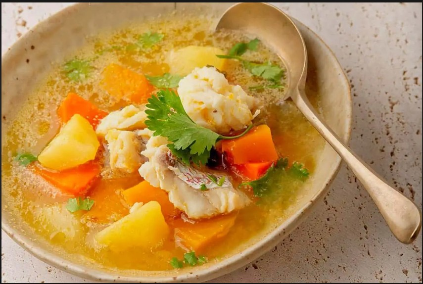

01
Sopa de Pescado
Coastal staple

A rich, deeply spiced fish soup simmered with palm oil, tomatoes, and forest herbs. Every coastal family has their own version passed down through generations.Some add plantain, others finish with a squeeze of wild lime.
SeafoodIngredients
- Fresh whole fish (tilapia or snapper)
- Palm oil
- Ripe tomatoes
- Onion & garlic
- Scotch bonnet pepper
- Forest herbs (bush basil)
- Plantain (optional)
Find Recipe
Sopa de Pescado Domin